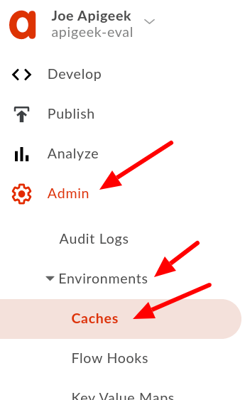
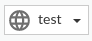
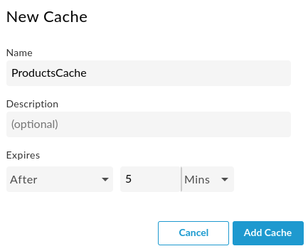
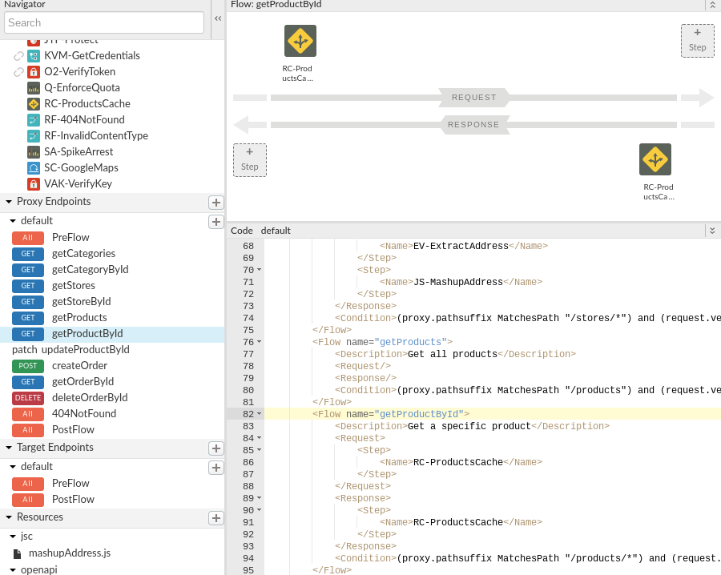
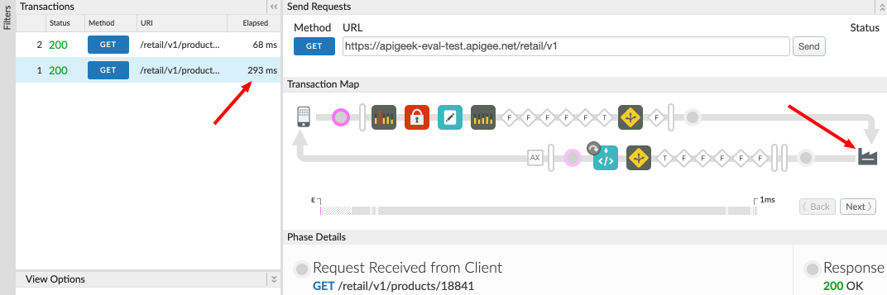
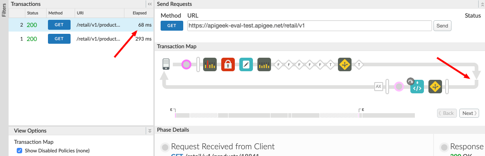

If the information returned to the client of the API is relatively static in nature, there's a good chance it can be cached in Apigee to save a few extra round trips to the backend every time a request for the information comes in.
What you'll learn
- How to use the ResponseCache policy
What you'll need
- Your proxy created in the previous lab
Use case
You want to cache some information in Apigee to save time and reduce the load in the backend, therefore, improving the overall response time and performance of your API.
Download a working solution to the previous lab as a proxy bundle ZIP file:
Prerequisites:
- Target Server: TS-Retail (instructions in lab 2)
- Product, Developer and App (instructions in lab 3)
- Key Value Map: ProductsKVM (instructions in lab 6)
- Shared Flow: BackendCredentials (instructions in lab 9)
Find your spec ID. When you open your spec in the spec editor, the link will be in this format, with the spec ID at the end of the URL:
https://apigee.com/organizations/YOURORG/specs/folder/FOLDERID/editor/YOURSPECID
Navigate to your proxy and upload the bundle as a new revision:

Select the association.json resource. Replace YOURORG and YOURSPECID with the values from the spec URL.

Once updated, the association.json should look something like this:
{
"url": "/organizations/apigeek-eval/specs/doc/207966/content"
}
Click Save to save your proxy. Open the Deployment menu, and check the deployment status. Click on test to deploy this revision of the proxy.

Test will be green when it is deployed.

- Create a new Cache
- Apply a Response Cache policy
Click on ‘Admin/Environments/Caches'

Select the test environment.

Now, click the ‘+ Cache' button:
This will bring a new popup:

Set the Name to:
ProductsCache
Everything else can remain default. Create the same cache in the prod environment if you want to be able to deploy to prod.
Back in the proxy, click on the getProductById flow, in the Proxy Endpoint side.
This should be the flow that handles GET requests to ‘/products/*'
Because a ResponseCache policy must be attached in two places, we can't use the buttons inside a flow to create the policy.
Click on the ‘+' button next to the Policies pane to add a new policy without attaching it to any flows.
Select the ResponseCache policy, and let's name it:
RC-ProductsCache
We'll also have to reference the ProductsCache cache we just created by adding a ‘<CacheResource>' entry to the policy. It should then look like:
<ResponseCache async="false" continueOnError="false" enabled="true" name="RC-ProductsCache">
<CacheKey>
<Prefix/>
<KeyFragment ref="request.uri" type="string"/>
</CacheKey>
<Scope>Exclusive</Scope>
<CacheResource>ProductsCache</CacheResource>
<ExpirySettings>
<ExpiryDate/>
<TimeOfDay/>
<TimeoutInSec ref="">120</TimeoutInSec>
</ExpirySettings>
<SkipCacheLookup>request.verb != "GET"</SkipCacheLookup>
<SkipCachePopulation>request.verb != "GET"</SkipCachePopulation>
</ResponseCache>Note that we are setting the time-to-live (TTL) to 2 minutes (120 seconds). Remember that when you update the overall_rating using "PATCH /products/{id}", you may not see the results until the cache entry has expired. For resources that can change frequently, make sure you don't cache the data for too long.
We also set the SkipCacheLookup and SkipCachePopulation policies to skip caching when the request is not a GET. Doing this is a best practice.
Now, drag the policy from the Policies box, to the Request and then again to the Response side of the getProductById flow. The exact same policy needs to appear twice.

This is for the policy to be able to run its full logic around cache lookups and to populate the cache when needed.
Save and test. The first request will call the backend.

Check the response times in the trace. You'll also notice that when the data comes from the cache, the backend is never called.

You now know how to use a response cache to improve performance.